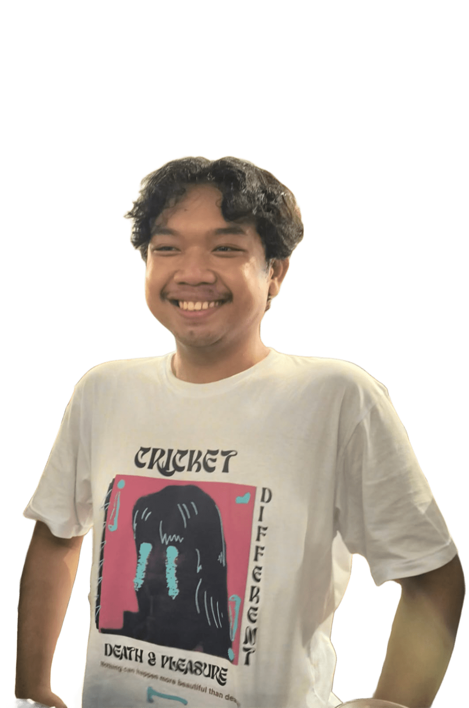

Hallo! Saya Moch Sapto Ady Subakti, lahir di Bojonegoro pada 11 Februari 2005. Saya adalah seorang web developer yang sangat antusias dalam menciptakan aplikasi web yang fungsional dan efisien. Dengan latar belakang kuat dalam pembuatan Sistem Informasi Manajemen (SIM), saya berfokus pada penyusunan kode yang bersih serta antarmuka yang memudahkan pengguna. Saya menikmati proses mengubah masalah operasional kompleks menjadi solusi digital yang terstruktur.
Saya memiliki keahlian dalam pengembangan web fullstack dengan fokus utama pada penggunaan ekosistem PHP dan framework Laravel. Pengalaman saya mencakup perancangan arsitektur backend yang kokoh serta pengelolaan database relasional yang efisien. Selain itu, saya terbiasa menganalisis masalah operasional dunia nyata untuk kemudian menerjemahkannya menjadi Sistem Informasi Manajemen (SIM) yang terstruktur, fungsional, dan ramah pengguna.
Membangun website dinamis dan responsif dari awal menggunakan teknologi modern untuk berbagai kebutuhan bisnis dan operasional.
Menciptakan arsitektur backend yang kuat, aman, dan efisien menggunakan framework Laravel untuk skalabilitas proyek.
Merancang Sistem Informasi Manajemen (SIM) khusus, seperti inventaris, reservasi, dan portal talenta.
Mengembangkan dan mengimplementasikan web aplikasi inventaris. Membuat berbagai fitur operasional yang krusial, termasuk sistem permintaan tautan Zoom, pemesanan konsumsi rapat, serta reservasi kendaraan dinas untuk mempermudah alur kerja institusi.
Merancang arsitektur database dan mengembangkan Sistem Informasi Manajemen (SIM) untuk mendata, mengelola, dan memonitor talenta serta keterampilan mahasiswa di lingkungan kampus.
Membangun proyek utama berbasis framework Laravel: Aplikasi pemesanan/rental motor dengan fitur manajemen ketersediaan, serta merancang fungsionalitas sistem dari hulu ke hilir.